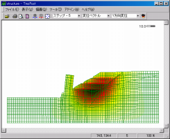
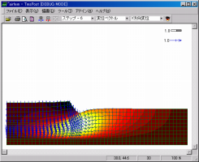
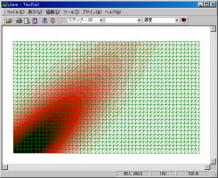
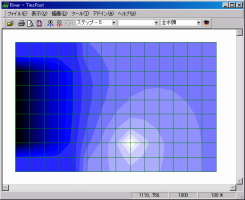
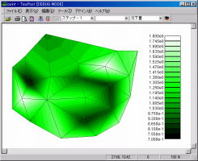
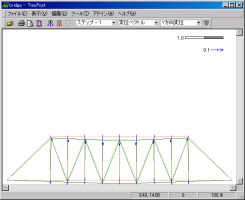

Tms Postは２次元汎用可視化プログラムで、主に２次元有限要素法（FEM）の計算結果の可視化やレポート作成をサポートします。メッシュ変位図・コンタ図・ベクトル図を組み合わせたインパクトのある表現が可能です。以下にTms Postが有する主な標準機能を示します。また、様々なアドインやツールをサポートし、標準機能以外の機能を拡張することが出来ます。
| 主な特徴 |
|
以下にTms Postを用いた可視化例を示します。FEMの計算結果以外にも地形データなどの様々な可視化を行うことができます。
| 断面2次元 全応力解析 |
断面2次元 圧密解析 |
断面2次元 移流拡散解析 |
|  |  |  |
| 平面2次元 浸透流解析 |
平面2次元 地盤標高 |
断面2次元 トラス解析 |
|  |  |  |